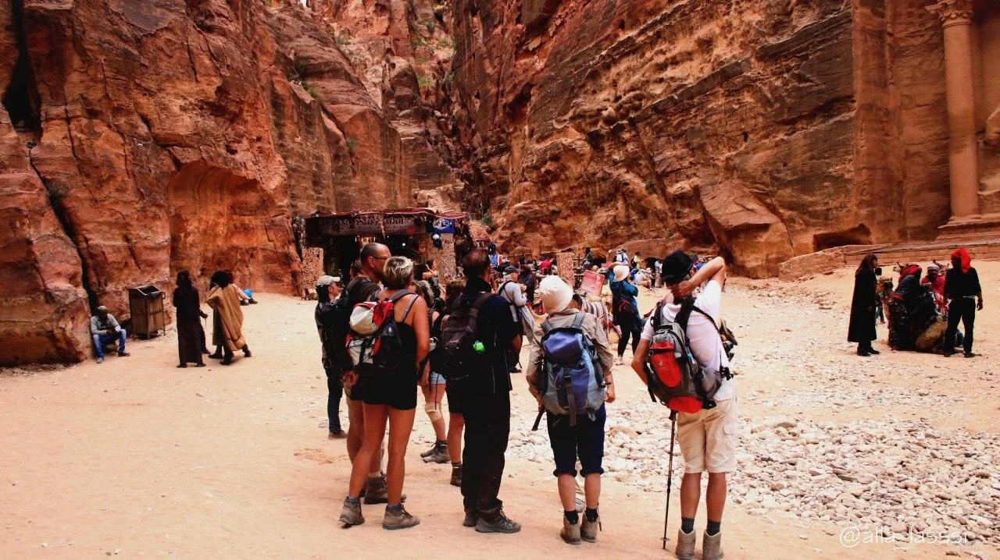
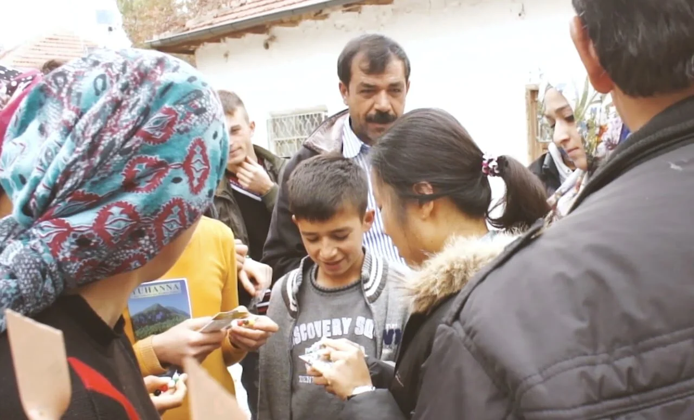

1. Train
In-depth training that will equip you to go carry out the Great Commission.

2. Go
Go to places in the world with the least access to the Good News of Jesus Christ.
3. plant seeds
Sow seeds of the Gospel that will impact generations to come!
